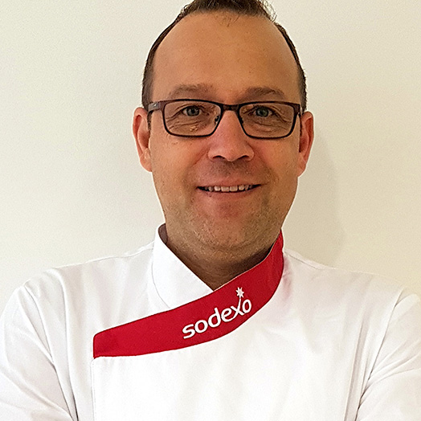

Hallo hier vind je alle informatie
Dit is de ondertitel
paragraafjes met heel veel tekens over belangrijke dingen

uitleg over
wijnen
Bieren
Kazen
Zuur desen broden
De belangrijkste grondstoffen voor bier
Hop
Gerst
Mout
water